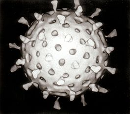

Ви́рус (лат. virus — «яд»[2]) — неклеточный инфекционный агент, который может воспроизводиться только внутри живых клеток. Вирусы поражают все типы организмов, от растений и животных до бактерий и архей (вирусы бактерий обычно называют бактериофагами). Обнаружены также вирусы, способные реплицироваться только в присутствии других вирусов (вирусы-сателлиты). Со времени публикации в 1892 году статьи Дмитрия Ивановского, описывающей небактериальный патоген растений табака, и открытия в 1898 году Мартином Бейеринком вируса табачной мозаики были детально описаны более 5 тысяч видов вирусов, хотя предполагают, что их существуют миллионы. Вирусы обнаружены почти в каждой экосистеме на Земле, они являются самой многочисленной биологической формой. Изучением вирусов занимается наука вирусология, раздел микробиологии. Пока вирус находится во внеклеточной среде или в процессе заражения клетки, он существует в виде независимой частицы. Вирусные частицы (вирионы) состоят из двух или трёх компонентов: генетического материала в виде ДНК или РНК (некоторые, например мимивирусы, имеют оба типа молекул); белковой оболочки (капсида), защищающей эти молекулы, и, в некоторых случаях, — дополнительных липидных оболочек. Наличие капсида отличает вирусы от вирусоподобных инфекционных нуклеиновых кислот — вироидов. В зависимости от того, каким типом нуклеиновой кислоты представлен генетический материал, выделяют ДНК-содержащие вирусы и РНК-содержащие вирусы; на этом принципе основана классификация вирусов по Балтимору. Ранее к вирусам также ошибочно относили прионы, однако впоследствии оказалось, что эти возбудители представляют собой особые инфекционные белки и не содержат нуклеиновых кислот. Форма вирусов варьирует от простой спиральной и икосаэдрической до более сложных структур. Размеры среднего вируса составляют около одной сотой размеров средней бактерии. Большинство вирусов слишком малы, чтобы быть отчётливо различимыми под световым микроскопом. Вирусы являются облигатными паразитами, так как не способны размножаться вне клетки. Вне клетки вирусные частицы не проявляют признаки живого и ведут себя как частицы биополимеров. От живых паразитарных организмов вирусы отличаются полным отсутствием основного и энергетического обмена и отсутствием сложнейшего элемента живых систем — аппарата трансляции (синтеза белка), степень сложности которого превышает таковую самих вирусов. Появление вирусов на эволюционном древе жизни неясно: некоторые из них могли образоваться из плазмид, небольших молекул ДНК, способных передаваться от одной клетки к другой, в то время как другие могли произойти от бактерий. В эволюции вирусы являются важным средством горизонтального переноса генов, обусловливающего генетическое разнообразие. Некоторые считают вирусы особой формой жизни, так как они имеют генетический материал, способны создавать себе подобные вирусы, и эволюционируют путем естественного отбора. Однако у вирусов отсутствуют важные характеристики (такие как клеточное строение), без которых их нельзя отнести к живому. Так как они обладают некоторыми, но не всеми свойствами, вирусы описываются как: «организмы на краю жизни», и как репликаторы. Вирусы распространяются многими способами: вирусы растений часто передаются от растения к растению насекомыми, питающимися растительными соками, к примеру, тлями; вирусы животных могут распространяться кровососущими насекомыми, такие организмы известны как переносчики. Вирус гриппа распространяется воздушно-капельным путём при кашле и чихании. Норовирус и ротавирус, обычно вызывающие вирусные гастроэнтериты, передаются фекально-оральным путём при контакте с заражённой пищей или водой. ВИЧ является одним из нескольких вирусов, передающихся половым путём и при переливании заражённой крови. Каждый вирус имеет определённую специфичность к хозяевам, определяющуюся типами клеток, которые он может инфицировать. Круг хозяев может быть узок или, если вирус поражает многие виды, широк. У животных вирусные инфекции вызывают иммунный ответ, который чаще всего приводит к уничтожению болезнетворного вируса. Иммунный ответ также можно вызвать вакцинами, дающими активный приобретённый иммунитет против конкретной вирусной инфекции. Однако некоторым вирусам, в том числе вирусу иммунодефицита человека и возбудителям вирусных гепатитов, удаётся ускользнуть от иммунного ответа, вызывая хроническую болезнь. Антибиотики не действуют на вирусы, однако было разработано несколько противовирусных препаратов.